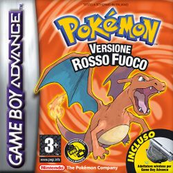

Download Pokemon Muli Version (alpha test)
Perchè dovrei scaricare questo pokemon?
-
Perchè l'ho fatto io
-
Perchè l'ho fatto io
-
ancora perchè l'ho fatto io
-
Perchè ho perso veramente tanto tempo per una cosa inutilissima. Mi farebbe piacere se ve la cagaste
così darei un senso ai mesi persi dietro sto gioco.
Come giocare?
-
Android: scaricare l'emulatore a questo link
-
IOS: scaricare l'emulatore a questo link
ATTENZIONE: per Iphone X c'è una versione apposita, sempre nello stesso link. Se non vi fa aprire l'applicazione a causa dello sviluppatore non identificato
, recarsi su impostazioni->generali->Gestione dispositivo Sotto "app aziendale" ci sarà qualche nome cinese, premetelo e
e autorizzatelo.
-
PC:Se giochi da PC sei abbastanza intelligente da cavartela da solo
-
LAVATRICE: Non si può, mi dispiace.
Come posso aiutarti?
- Segnalami bug, crash, miglioramenti
via instagram
, facebook
, email
, o magari whatsapp dato che avrai il mio numero
-
Passando il gioco a qualche tuo fratello fidato ingiustamente carcerato che sappia apprezzare la particolarità di Muggia e dei suoi personaggi.
-
Offrendomi una birra tramite PayPal (tasto sotto)
Cosa devo sapere prima di giocare?
-
Per me è stato un passatempo, non è il risultato che mi aspettavo ma mi sono impegnato tanto.
Se vi aspettate qualcosa di perfetto, come il suo creatore, allora siete nel posto sbagliato.
Il gioco è di immense dimensioni, modificare punto per punto sarebbe stato un lavoro troppo lungo per una sola persona.
Ho cercato di modificare soltanto la storia principale per guadagnare tempo. Molti personaggi avranno la loro parte originare in inglese, lingua che voi tutti sapete (eccetto Pier e Ieie).
Tutto ciò che non è stato modificato vuol dire che non ha significato per la storia del gioco, quindi non preoccupatevi di tradurre in italiano.
-
Purtroppo non ho potuto mettere tutti dentro, mi dispiace per chi è rimasto fuori ma mi dispiace di più per chi è dentro
perchè vuol dire che siete proprio brutte persone.
-
IMPORTANTE:
Il gioco è stato testato solo con un personaggio iniziale di sesso maschile. La controparte femminile ha risposte diverse che non sono state
modificate, è importante creare un personaggio maschio.
- La storia del gioco finisce dopo aver battuto la lega Pokemon, dopo di particolare rimane solo da conquistare
i pokemon leggendari.
Clicca qui per avviare il Download.
Come si vince?
-
Nel discorso finale contro l'ultimo allenatore della Lega Pokemon, comparirà un codice che dovrete inserire
qui
Per donazioni: